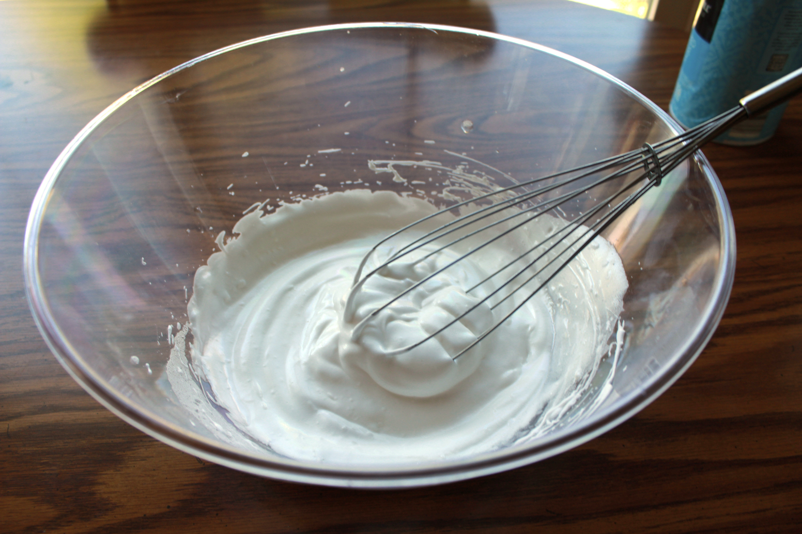
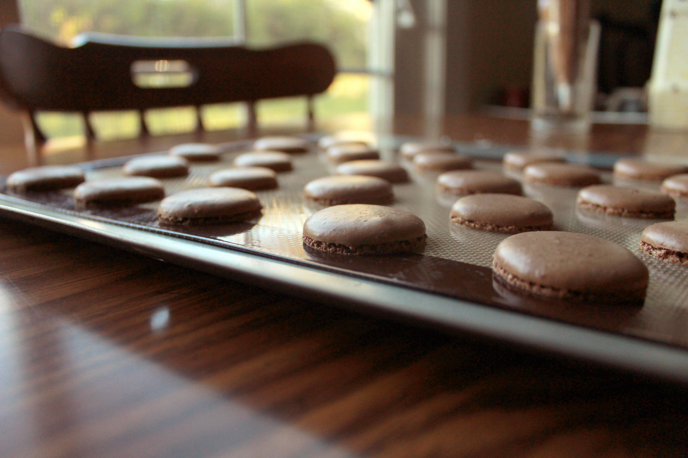

FRENCH MACARON
submitted by Kim Duong
(1)
Want to experience French desserts without spending a fortune? Forgo the headaches and rude French with these easy-to-make macarons. There's just something relaxing about petit French cookies with gooey goodness sandwiched inbetween.

It starts with simple ingredients you can find at any store, just be sure to check in the specialty foods aisle. As you ready your ingredients, make sure everything is at room temperature--this is important for consistency.

When you start whipping your meringue, you can cheat and use a machine--I just like the unneccessary pain. Add some salt as you mix in the sugar for a balanced sweet taste. When peaks are stiff and it doesn't flop or move when you turn it upside down, you got a winner.

Add dry ingredients! What I keep in mind is to look for a lava like consistency as you fold--don't stir. You want to be gentle like a French sleeping. If that makes sense.

What beautiful classic feet you have! To make sure you have these feet, make sure to bang the tray a couple of times to release bubbles. Some people prefer to wait before they put it in the oven--for this recipe, you may pop it in whenever.

We used our secret family sauce--nutty and chocolatey. You can purchase our sauce in stores. For diabetics, a diabetic chocolate or jam as a substitute is perfect for this recipe.

Making these with family and friends can be fun when you assemble these classic cookies! You can also try different shapes when you bake them so they aren't all just circles.

Simple. Easy. Delicious. Did I mention sweet? This is vegan, gluten free, and naturally sweetened so everyone can enjoy.